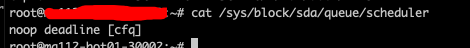

概述
- 本篇文档梳理Linux IO栈
IO栈总体认知
用户空间
- 库函数缓存, 把多次open或者write调用合并为一次, 例如c语言的stdio库，以减少真正的System Call次数为目的
VFS层
- VFS层的作用: VFS是一个抽象层,其向上提供了统一的文件访问接口,而向下则兼容了各种不同的文件系统。不仅仅是诸如Ext2、Ext4、XFS和Btrfs等常规意义上的文件系统,还包括伪文件系统和设备等等内容.
文件系统层
-
文件系统层的优化包括2块:
- 1 格式化时根据业务场景选择block大小和inode数量
- 2 使用不同的mount option(挂载参数)和合理的日志记录, 来贴合业务场景.
- 如果业务要求高性能, 那么尽可能多利用缓存.
- 如果业务要求数据高安全, 那么尽可能把数据落地到块设备.
ext4文件系统完整的挂载参数
-
常用的挂载参数:
-
data、noatime、nobarrier、delalloc、inode_readahead_blks、commit
-
- 其中
data就是下面一节会讲解的日志模式
- 其中
ext4文件系统的日志模式
-
ext4有3种日志模式，分别是ordered，writeback，journal。他们的差别网上有很多资料，我简单介绍下：
-
- jorunal：把元数据与数据一并写入到日志块。性能差不多折半，因为数据写了两次，但最安全
-
- writeback: 把元数据写入日志块，数据不写入日志块，但不保证数据先落盘。性能最高，但由于不保证元数据与数据的顺序，也是掉电最不安全的
-
- ordered：与writeback相似，但会保证数据先落盘，再是元数据。折中性能以保证足够的安全，这是大多数PC上推荐的默认的模式
Page Cache
-
页缓存在FS与通用块层之间, 为了提高IO性能，减少真实的从磁盘读写的次数，Linux内核设计了一层内存缓存，把磁盘数据缓存到内存中。由于内存以4K大小的
页为单位管理，磁盘数据也以页为单位缓存，因此也称为页缓存。在每个缓存页中，都包含了部分磁盘信息的副本。 -
对于读操作, 如果因为之前读过或者被预读加载进来，而本次要读取数据刚好在缓存中命中，就可以直接从缓存中读取，不需要深入到磁盘。
- 对于写操作, 不管是
同步写还是异步写，都会把数据copy到缓存，差别在于异步写只是copy且把页标识脏后直接返回，而同步写还会调用类似fsync()的操作等待回写.异步写产生的脏数据会在合适的时候被内核工作队列writeback进程回刷。
内核writeback线程的4个主要内核参数
| 内核参数 | 默认值 | 单位 | 备注 |
|---|---|---|---|
| /proc/sys/vm/dirty_writeback_centisecs | 500 | 1/100秒 | 定期唤醒writeback内核线程，回写脏页 |
| /proc/sys/vm/dirty_expire_centisecs | 300 | 1/100秒 | writeback线程被唤醒后，并不是写回所有脏页，而是只写变脏超过dirty_expire_centisecs时间的页. |
| /proc/sys/vm/dirty_background_ratio | 10 | 比例，默认为10%，当脏页比例超过系统所有page数量的10%时 | 当脏页占系统内存的比例超过/proc/sys/vm/dirty_background_ratio 的时候，write系统调用会唤醒pdflush回写dirty page,直到脏页比例低于/proc/sys/vm/dirty_background_ratio，但write系统调用不会被阻塞，立即返回。 |
| /proc/sys/vm/dirty_ratio | 20 | 比例，默认为20%，当脏页数量占系统所有页数量比例超过20%时 | write系统调用会被阻塞，writeback线程会工作，直到脏页占比低于/proc/sys/vm/dirty_ratio |
IO操作的三种模式
从系统调用的接口再往下，Linux下的IO栈致大致有三个层次：
- 文件系统层，以 write 为例，内核拷贝了write参数指定的用户态数据到文件系统Cache中，并适时向下层同步
- 块层，管理块设备的IO队列，对IO请求进行合并、排序（还记得操作系统课程学习过的IO调度算法吗？）
- 设备层，通过DMA与内存直接交互，完成数据和具体设备之间的交互 结合这个图，想想Linux系统编程里用到的Buffered IO、mmap、Direct IO，这些机制怎么和Linux IO栈联系起来呢？上面的图有点复杂，我画一幅简图，把这些机制所在的位置添加进去：
介绍一下三种IO模式:
-
Buffered IO: 传统的Buffered IO使用read读取文件的过程： 从磁盘到Page Cache算第一次的话，从Page Cache到用户态buffer就是第二次了. 写操作的话, 是写到Page Cahce就返回, 然后等待writeback内核线程刷回去.
-
MMAP: 直接把Page Cache映射到了用户态的地址空间里了，所以mmap的方式读文件是没有第二次拷贝过程的.
- 如何开启MMAP: 使用mmap系统调用.
-
Direct IO: 这个机制更狠，直接让用户态和块IO层对接，直接放弃Page Cache，从磁盘直接和用户态拷贝数据.
- 好处: 写操作可以直接写到块IO层.
- 坏处: 读操作默认情况下，不如Buffered IO，除非你在用户态自己模拟Buffered IO，做缓存.
- 如何开启Direct IO: An application invokes direct I/O by opening a file with the O_DIRECT flag.
再来看一张详细的图
- 用户层最多到达
通用块层,通用块层以下必须由内核自行控制了. - 用户层在wirte系统调用时, 使用
O_DIRECT标记, 会开启Direct IO, 但光有Direct IO, 仍然只是写到通用块层, 如果需要数据绝不丢失, 那么还要加上O_SYNC标记
BIO层的优化
- 为不同进程指定不同的IO优先级. Linux supports I/O scheduling priorities and classes since 2.6.13 with the CFQ I/O scheduler.
- 常用的IO classess包括:
Idle、Best-effort、Realtime.
Request层的优化
- 电梯调度算法
- Request队列个数、预读数据大小
关于IO调度算法的单队列和多队列
网上检索IO调度算法，大量的资料都在描述Deadline，CFQ，NOOP这3种调度算法，却没有备注这只是单队列上适用的调度算法。在最新的代码上（我分析的代码版本为 5.7.0），已经完全切换到multi-queue的新架构上了，支持的IO调度算法就成了mq-deadline，BFQ，Kyber，none。
在《Linux-storage-stack-diagram_v4.10》 对 Block Layer 的描述可以形象阐述单队列与多队列的差异。
单队列的架构，一个块设备只有一个全局队列，所有请求都要往这个队列里面塞，这在多核高并发的情况下，尤其像服务器动则32个核的情况下，为了保证互斥而加的锁就导致了非常大的开销。此外，如果磁盘支持多队列并行处理，单队列的模型不能充分发挥其优越的性能。
多队列的架构下，创建了Software queues和Hardware dispatch queues两级队列。Software queues是每个CPU core一个队列，且在其中实现IO调度。由于每个CPU一个单独队列，因此不存在锁竞争问题。Hardware Dispatch Queues的数量跟硬件情况有关，每个磁盘一个队列，如果磁盘支持并行N个队列，则也会创建N个队列。在IO请求从Software queues提交到Hardware Dispatch Queues的过程中是需要加锁的。理论上，多队列的架构的效率最差也只是跟单队列架构持平。
查看当前设备,比如/dev/sda 的IO调度算法查看
cat /sys/block/sda/queue/scheduler
debian 10 虚拟机
Debian 10 物理机

适当加大request queue的长度
-
/sys/block/sda/queue/nr_requests (块层最大可以申请的request数量)
-
/sys/block/sda/queue/read_ahead_kb (预读最大的数据量)
块设备的优化
- 如果服务器几乎没有掉电风险，那么建议开启Raid卡的缓存、硬盘本身的缓存. 涉及到命令工具不少, 例如服务器厂商提供的Raid卡操作工具.
参考文章
经典IO模式和io_uring
1 五种 Unix I/O 模式
在常见的 unix io 语义下，我们的一次 I/O 需要经过两个阶段(phase)：
- 数据等待：等待数据、设备等与本次 IO 相关的模块 ready；
- 数据传输：将数据在内核态和用户态中交换。
而根据这两个阶段处理的方式不同，我们总计有不同的五种 I/O 模式。下面的图是基于从 socket 等待并读取数据的场景对五种 I/O 模式的比较。
这里，我们仅探讨三个重要的 I/O 模型：
- 阻塞 I/O：一次 syscall，只能等待一个 fd，从初始化就等待到完成后返回，横跨两个阶段。
- 阻塞 I/O 多路复用：多个 syscall，能等待多个 fd，其中
-
- 等待阶段
-
-
- select/poll：将感兴趣的 fd 提供给 select，当任意一个 fd 的状态就绪时（可能也会有多个就绪），扫描注册的 fd 列表查看哪些可以读取，一个 syscall；
-
-
-
- epoll：将感兴趣的 fd 注册到事件列表中（1 syscall），之后使用 epoll_wait 等待内核通知事件已完成（1 syscall）；
-
-
- 传输阶段：将数据 copy 回用户态，一个 syscall。
- 异步 I/O：一次 syscall，只能操作一个 fd，横跨两个阶段，当事件完成时，已经拿到了需要的数据。
概念区分：
- 阻塞 & 同步：执行某个操作时，我们必须等待资源就绪（函数返回），这个过程中我们做不了其他操作；
- 非阻塞：执行这个操作时，资源还没就绪的状态下我们不需要等待（函数立即返回），但是我们需要主动检查资源是否就绪（主动轮询 or etc.）；
- 异步：执行操作时我们不需要等待（函数立即返回），操作被后台 worker 执行，成功后我们获得提醒（回调函数 or etc.）。 可以参考 https://stackoverflow.com/questions/2625493/asynchronous-and-non-blocking-calls-also-between-blocking-and-synchronous。
可以看到，上面的前几种 I/O 模型里面都对等待阶段作出了各种各样的优化，而其中 epoll 也成为了近 10 年 Linux I/O 的最佳选择。实际上，在数据复制阶段，最近 20 年内核也进行了多个层次的优化，核心目的是为了尽可能做到零拷贝——让数据直达用户态。其中涉及到的多种技术和手段不是本次分享的重点，按下不表，感兴趣的可以搜索关键词 Zero-copy，DMA，RDMA 等等。
2 io_uring 咋工作的
io_uring: io with user ring buffer
- 通过两个 Ring buffer 来和内核通信
-
- Submission/Completion Queue（SQ/CQ）：I/O 请求和响应队列
-
- Submission/Completion Queue Entry（SQE/CQE）：两个队列中的具体对象类型
- 生产请求和消费数据不需要 syscall
-
- 直接读写 SQ 和 CQ 即可，不需要通过 syscall 来注册 or 消费；
-
- 通过内存读写屏障 or atomic 操作来让两侧感知新的 entry 添加和消费；
-
- 用户 mmap 申请内存，保证 Ring 3 权限可读写。